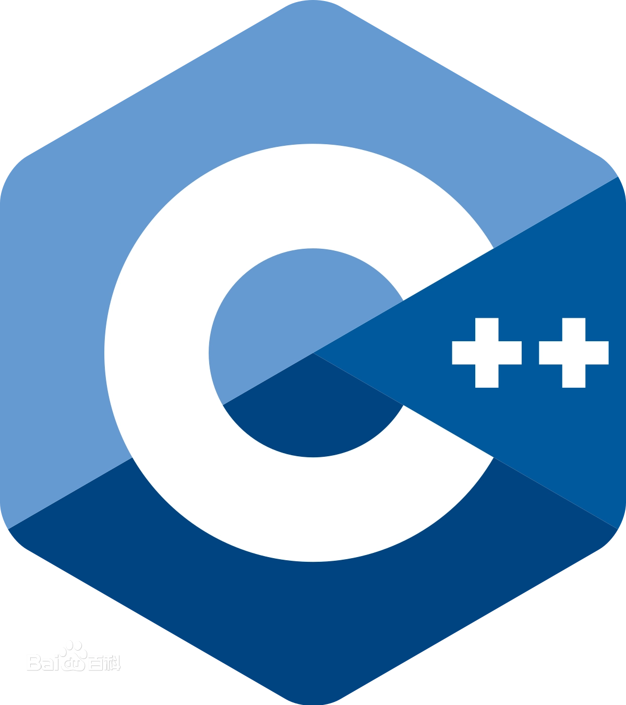

C++

C++（c plus plus）是一种计算机高级程序设计语言，由C语言扩展升级而产生。 C++既可以进行C语言的过程化程序设计，又可以进行以抽象数据类型为特点的基于对象的程序设计， 还可以进行以继承和多态为特点的面向对象的程序设计。 C++擅长面向对象程序设计的同时，还可以进行基于过程的程序设计。 C++几乎可以创建任何类型的程序：游戏、设备驱动程序、HPC、云、桌面、嵌入式和移动应用等。 甚至用于其他编程语言的库和编译器也使用C++编写。 C++拥有计算机运行的实用性特征，同时还致力于提高大规模程序的编程质量与程序设计语言的问题描述能力。
发展历程
20世纪70年代中期，本贾尼·斯特劳斯特卢普在剑桥大学计算机中心工作。 斯特劳斯特卢普希望开发一个既要编程简单、正确可靠， 又要运行高效、可移植的计算机程序设计语言。 而以C语言为背景，以Simula思想为基础的语言，正好符合斯特劳斯特卢普的初衷和设想。 1979年，本贾尼·斯特劳斯特卢普到了AT&T贝尔实验室，开始从事将C改良为带类的C（C with classes）的工作。 1983年，该语言被正式命名为C++。
C++的标准化工作于1989年开始 [21] ，并成立了一个ANSI和 ISO（International Standards Organization） 国际标准化组织的联合标准化委员会。 1994年1月25日，联合标准化委员会提出了第一个标准化草案。 在该草案中，委员会在保持斯特劳斯特卢普最初定义的所有特征的同时，还增加了部分新特征。
在完成C++标准化的第一个草案后不久，亚历山大·斯特潘诺夫（Alexander Stepanov）创建了标准模板库（Standard Template Library，STL）。 在通过了标准化第一个草案之后，联合标准化委员会投票并通过了将STL包含到C++标准中的提议。 STL对C++的扩展超出了C++的最初定义范围。虽然在标准中增加STL是个很重要的决定， 但也因此延缓了C++标准化的进程。
1997年11月14日，联合标准化委员会通过了该标准的最终草案。 1998年，C++的ANSI/IS0标准被投入使用。 自C++的ANSI/IS0标准投用以来，共进行过5次更新。 最新的C++标准为2020年12月发布的“C++20”。
语言特点
- 与C语言完全兼容
- 数据封装和数据隐藏
- 支持继承和重用
- 多态性